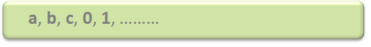
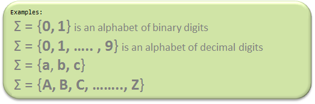

Automata theory (also known as Theory Of Computation) is a theoretical branch of Computer Science and Mathematics, which mainly deals with the logic of computation with respect to simple machines, referred to as automata.
Automata* enables scientists to understand how machines compute the functions and solve problems. The main motivation behind developing Automata Theory was to develop methods to describe and analyze the dynamic behavior of discrete systems.
Automata originated from the word “Automaton” which is closely related to “Automation”.
A symbol (often also called a character) is the smallest building block, which can be any alphabet, letter, or picture.

Alphabets are a set of symbols, which are always finite.

A string is a finite sequence of symbols from some alphabet. A string is generally denoted as w and the length of a string is denoted as |w|.
Empty string is the string with
zero occurrence of symbols,
represented as ε.
Number of Strings (of length 2)
that can be generated over the alphabet {a, b}:
- -
a a
a b
b a
b b
Length of String |w| = 2
Number of Strings = 4
Conclusion:
For alphabet {a, b} with length n, number of
strings can be generated = 2n.
Closure Representation in TOC:
L+: It is a Positive Closure that represents a set of all strings except Null or ε-strings.
L*: It is “Kleene Closure“, that represents the occurrence of certain alphabets for given language alphabets from zero to the infinite number of times. In which ε-string is also included.
From the above two statements, it can be concluded that:
Example:
(a) Regular expression for language accepting all combination of g's over Σ={g}:
R = g*
R={ε,g,gg,ggg,gggg,ggggg,...}
(b) Regular Expression for language accepting all combination of g's over Σ={g} :
R = g+
R={g,gg,ggg,gggg,ggggg,gggggg,...}